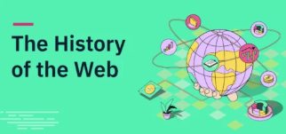

How HTTP Built the Modern Web
HTTP—the Hypertext Transfer Protocol—is the backbone of data exchange online. It began as a simple method for researchers to share documents and evolved into the engine behind streaming, cloud apps, APIs, and the Internet of Things. This site explores how HTTP has continuously adapted to meet growing demands for speed, scale, security, and reliability.
What’s Covered
- From HTTP/0.9 to HTTP/1.1 – The foundational eras that established open, interoperable web standards
- HTTP/2 and HTTP/3 – Innovations for mobile, real-time, and encrypted communication
- Core technical ideas – Multiplexing, QUIC, TLS, and more
- Where to learn more